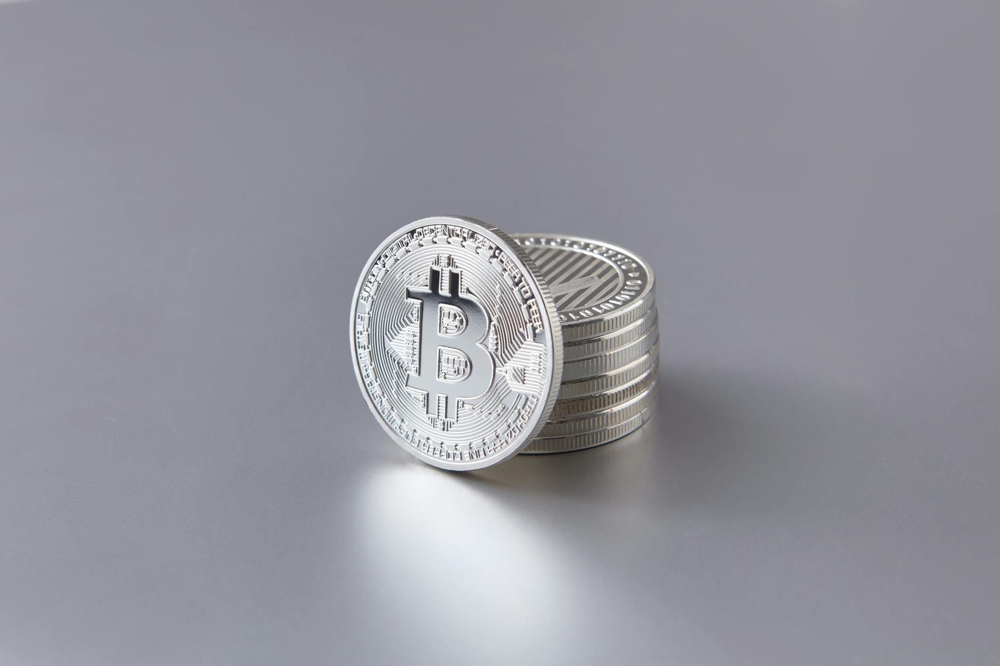
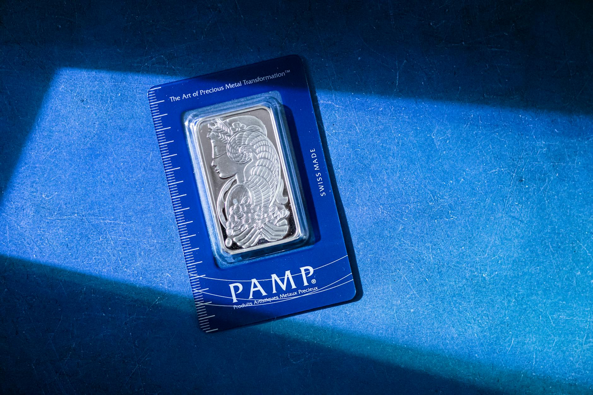

Silver has the highest thermal conductivity of any element at 429 watts per meter-kelvin (Wikipedia, citing CRC Handbook of Chemistry and Physics). That single physical fact is the basis for the most reliable at-home test a new buyer can run. It's also the reason counterfeits are harder to make convincing than most people assume.
Fake silver exists at every price point and on most resale platforms. The most common type is a base-metal coin or bar plated with a thin layer of real silver. More sophisticated fakes use tungsten cores inside silver shells. Both fail simple physical tests. You don't need lab equipment to catch them. You need to know what properties real silver has and how to measure them.
Here are six tests that cover 99% of what a new buyer encounters in the secondary market.
Key Takeaways
- Silver's thermal conductivity of 429 W/mK is the highest of any element. An ice cube melts visibly faster on real silver than on any common substitute (Wikipedia, CRC Handbook).
- An American Silver Eagle weighs exactly 31.103 grams and measures 40.6 mm across. Any deviation beyond 0.1g or 0.5mm is a red flag (Wikipedia, US Mint specifications).
- Genuine .999 fine silver is non-magnetic. A neodymium magnet won't stick to it, and a coin tilted at 45 degrees will slow slightly as it slides past the magnet field.

Test 1: The Ice Test (Thermal Conductivity)
Silver conducts heat at 429 watts per meter-kelvin, the highest thermal conductivity of any element (Wikipedia, citing CRC Handbook of Chemistry and Physics). Copper is second at 401 W/mK. Tungsten, one of the most common fake-silver substitutes, comes in at 173 W/mK. Lead is 35.3 W/mK. The gap between silver and everything else is large enough to see with your eyes.
Place a small piece of ice directly on a coin or bar. On real silver, the ice starts melting almost immediately and continues faster than you'd expect. On a silver-plated fake, the ice sits longer because the base metal underneath insulates it. The test takes about 30 seconds. You don't need a thermometer or any equipment beyond a standard ice cube.
The ice test works because it's testing the actual physical property of the metal, not a surface feature that could be counterfeited. A plated coin can replicate the look of silver. It can't replicate the heat transfer rate of the metal underneath.
Test 2: The Magnet Test
Silver is diamagnetic, meaning a strong magnet won't attract it (Wikipedia, Silver). A neodymium magnet held near or placed on a real silver coin or bar will show no attraction at all. The magnet test is useful but limited: most common fake metals like zinc and copper are also non-magnetic, so passing the magnet test doesn't guarantee the piece is silver.
Where the magnet test gets more specific is the diamagnetic slide test. Hold a real silver coin at a 45-degree angle and slowly slide a neodymium magnet past it. Real silver creates a slight braking effect as the magnet passes, because of eddy currents induced in the metal. A base-metal fake may not show this effect. The slide is subtle and takes practice to read, but it's a useful secondary check.
What the magnet test does well: it immediately catches any fake made from ferrous metal. If a coin or bar sticks to the magnet, it's not silver.
Test 3: Weight and Dimensions
The American Silver Eagle has published specifications: exactly 31.103 grams, 40.6 mm diameter, and 2.98 mm thick (Wikipedia, American Silver Eagle). The Canadian Silver Maple Leaf is 31.11 grams, 37.97 mm diameter, and 3.29 mm thick (Wikipedia, Canadian Silver Maple Leaf). One troy ounce silver rounds and bars from reputable mints follow the same 31.103-gram standard.
A digital scale accurate to 0.01 grams costs under $20 and catches most weight-based fakes immediately. If a coin claiming to be 1 oz silver weighs 28 grams or 34 grams, it's wrong regardless of how it looks. Pair the scale with a digital caliper for the diameter check. Most tungsten-core fakes have the right weight but are slightly too thick or too narrow in diameter because tungsten is 1.84 times denser than silver and requires less volume for the same mass.
Silver's density is 10.503 grams per cubic centimeter, while tungsten is 19.254 g/cm³, nearly twice as dense (Wikipedia, Silver and Tungsten). A tungsten-core fake with the correct mass will be physically smaller than a genuine coin. Measuring the diameter and thickness of a coin alongside its weight catches this type of counterfeit that the magnet test and ice test might both miss.
What the Hallmarks and Purity Stamps Mean
Genuine bullion silver carries purity marks that indicate fineness. The most common are .999 (99.9% silver, the minimum for Good Delivery bars per LBMA standards), .9999 (99.99%, used by the Royal Canadian Mint for Maple Leafs), .925 (sterling silver, 92.5% silver mixed with 7.5% copper, standard for jewelry and tableware since Edward I of England mandated it in 1275), and .900 (90% silver, found on pre-1964 US dimes, quarters, and half-dollars) (Wikipedia, Fine Silver; Wikipedia, Sterling Silver).
These marks can be stamped onto fakes too. A .999 stamp on a silver-plated zinc coin means nothing on its own. The hallmark is a starting point, not a conclusion. Look for sharp, clean stamping with consistent depth. Counterfeit stamps are often slightly soft or misaligned when viewed under magnification.
Two additional things on genuine modern coins worth checking: the American Silver Eagle (2021 and later) has a missing reed on the edge as an anti-counterfeiting feature that changes by mintage year (Wikipedia, American Silver Eagle). The Canadian Silver Maple Leaf since 2014 carries a radial line pattern and a micro-engraved laser security mark on the reverse. These features are difficult to replicate convincingly.

Three More Tests Worth Knowing
The Ping Test
Balance a silver coin on your fingertip and tap it with another coin. Real silver produces a clear, bell-like ring that sustains for a second or two. Base metals produce a dull, flat thud. The pitch is higher and cleaner on genuine silver. This test works best with larger coins like 1 oz rounds. It's quick and requires no equipment, though it takes practice to calibrate your ear.
The Acid Test
A small bottle of nitric acid (available from jewelry supply stores for under $10) lets you test a scratch on the piece's surface. Make a small scratch in an inconspicuous spot and apply one drop. Genuine .999 silver produces a cream or milky white reaction. A silver-plated fake will initially show the same reaction at the scratch, but if you continue to the base metal underneath, it turns green (copper base) or another color depending on the substrate. The acid test is destructive to the surface, so use it only when other tests are inconclusive.
XRF Analysis
Handheld X-ray fluorescence devices identify elemental composition through the surface and sub-surface layers of a coin or bar without damaging it (Wikipedia, X-ray Fluorescence). Professional coin dealers and precious metals shops often have these on-site. If you're buying a significant quantity or high-value pieces and want certainty, asking a local coin dealer to run an XRF test on a sample is reasonable. Most will do it for free or a small fee. It's the only test that catches sophisticated tungsten-core fakes that pass all the at-home tests.
Frequently Asked Questions
Will a fake silver coin pass the ice test?
A silver-plated base-metal coin will not pass the ice test reliably. Silver's thermal conductivity of 429 W/mK is the highest of any element. Even a thin silver coating over copper or zinc will conduct heat differently than a solid silver coin. Ice melts noticeably faster on genuine silver because the metal underneath is pulling heat from the ice at a far higher rate than any common substitute.
How do I know if junk silver is real?
Pre-1964 US dimes, quarters, and half-dollars contain 90% silver and weigh specific amounts. A 1964 quarter weighs 6.25 grams and measures 24.3 mm. A pre-1964 dime weighs 2.5 grams and measures 17.9 mm. Use a digital scale and caliper. The ice test and magnet test both work on junk silver. One dollar face value in pre-1964 coins contains 0.715 troy ounces of pure silver (Wikipedia, Junk Silver).
Can a coin pass the magnet test but still be fake?
Yes. Most common base metals used in fakes, including zinc, copper, and tungsten, are not magnetic. The magnet test only catches ferrous metal fakes. A coin that passes the magnet test could still be silver-plated zinc or a tungsten-core fake. Always run the ice test and the weight/dimension check alongside the magnet test, not instead of it.
What's the difference between .999 and .9999 silver?
Both are considered fine silver. .999 (three nines) means 99.9% purity and is the standard for most bullion coins including the American Silver Eagle and most generic rounds and bars. .9999 (four nines) means 99.99% purity and is used by the Royal Canadian Mint for the Silver Maple Leaf. For investment purposes, both are accepted as good delivery by major dealers (Wikipedia, Fine Silver).
Sources
- Wikipedia, citing CRC Handbook of Chemistry and Physics. "Silver — Physical Properties." Retrieved 2026-05-31. en.wikipedia.org/wiki/Silver
- Wikipedia. "American Silver Eagle." Retrieved 2026-05-31. en.wikipedia.org/wiki/American_Silver_Eagle
- Wikipedia. "Canadian Silver Maple Leaf." Retrieved 2026-05-31. en.wikipedia.org/wiki/Canadian_Silver_Maple_Leaf
- Wikipedia. "Fine Silver — Purity Grades." Retrieved 2026-05-31. en.wikipedia.org/wiki/Fine_silver
- Wikipedia. "Sterling Silver." Retrieved 2026-05-31. en.wikipedia.org/wiki/Sterling_silver
- Wikipedia. "Junk Silver." Retrieved 2026-05-31. en.wikipedia.org/wiki/Junk_silver
- Wikipedia. "Tungsten — Physical Properties (density 19.254 g/cm³, thermal conductivity 173 W/mK)." Retrieved 2026-05-31. en.wikipedia.org/wiki/Tungsten
- Wikipedia. "X-ray Fluorescence." Retrieved 2026-05-31. en.wikipedia.org/wiki/X-ray_fluorescence
- Wikipedia. "Silver Bullion — LBMA Good Delivery Standard." Retrieved 2026-05-31. en.wikipedia.org/wiki/Silver_bullion
- CoinWeek. "Fun with Fakes: The Trifecta — Chinese Counterfeit Coins, Slabs and Websites." 2026. coinweek.com